About SCy-Phy
SCy-Phy is a research group at SUTD in Singapore, led by Asst. Prof Nils Ole Tippenhauer. The group focuses on applied security research in the domain of cyber-physical systems: industrial control systems (ICS), embedded systems, Internet-of-Things (IoT). The group is fortunate to have access to several existing and planned Industrial Control System testbeds in the domain of Water Treatment, Water Distribution, and Electrical Power Grid.
SCy-Phy's research is part of iTrust at SUTD.
Selected Projects
Here are some of our recent projects.
-
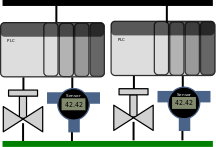
MiniCPS
MiniCPS is a toolbox to integrate network emulation, system simulations, and physical process simulation for Cyber-Physical Systems with networks, for example Industrial Control Systems. article paper slides
-
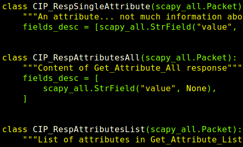
Bro and Scapy extensions for EtherNet/IP
We are extending a number of open source tools to understand the industrial protocols which are spoken by our testbeds.
-
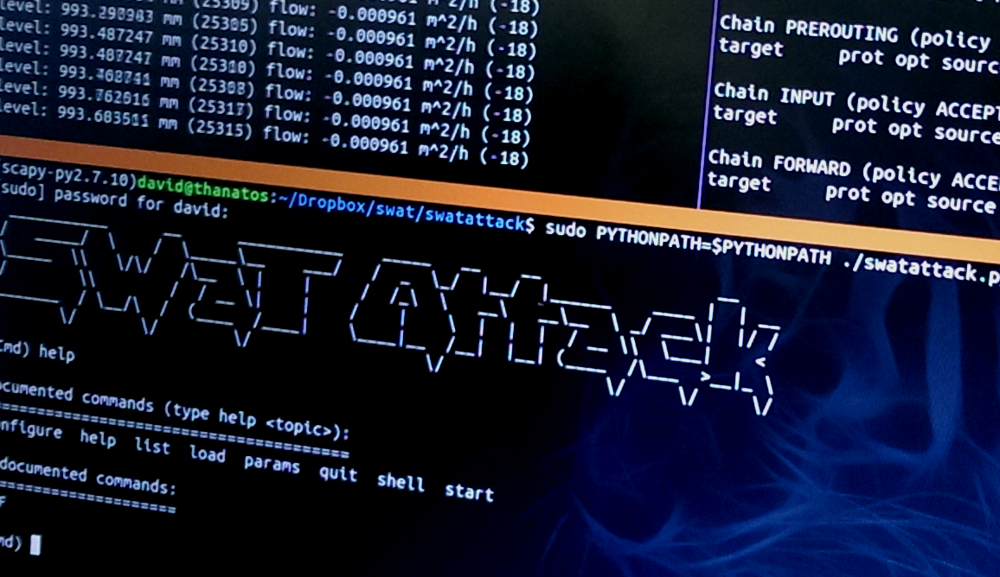
SWaT Attack: Exploit tool
We are developing SwaT Attack, a custom exploit tool to allow easy attack reproduction in our testbed.
Group members
-
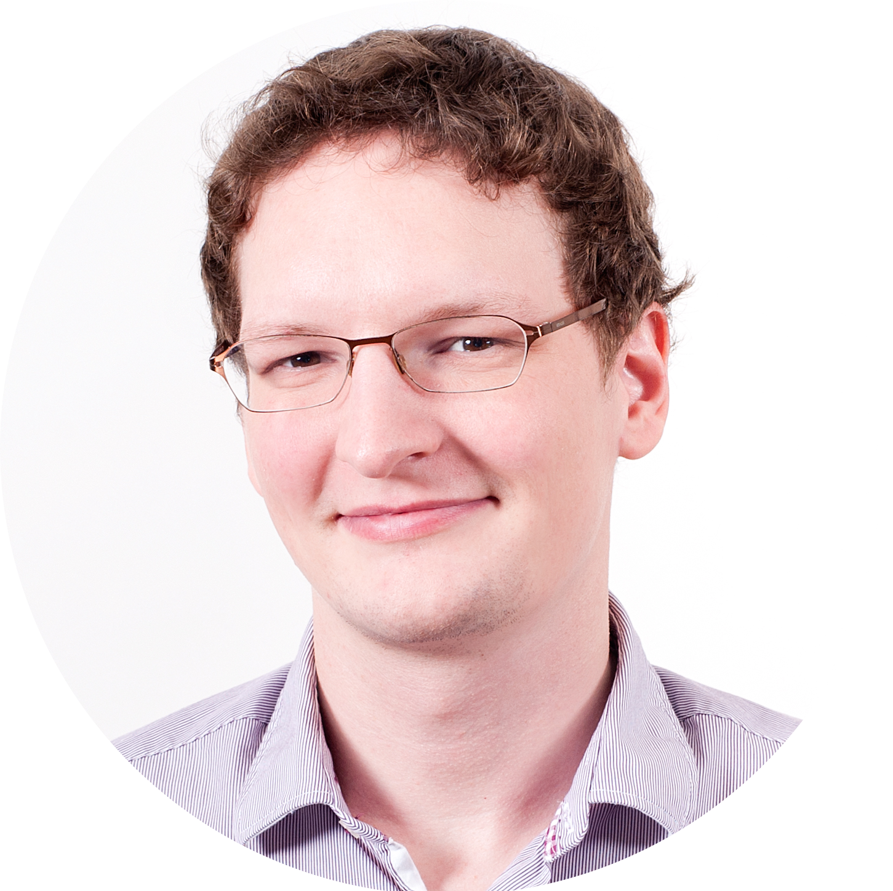
Nils Ole Tippenhauer, Asst. Prof.
Nils leads the SCy-Phy group, his personal page can be found here.
-
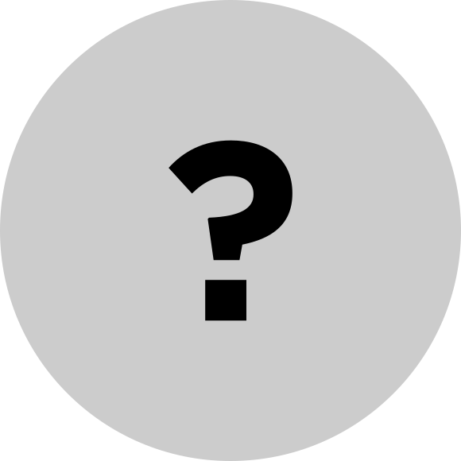
Open PostDoc Position
We are looking for a PostDoc with a background in applied formal methods, embedded security, or other security. Contact Nils here.
-

Hamid Ghaeini, PhD student
Hamid is a PhD student since January 2015, see his personal page.
-
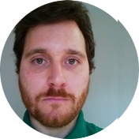
Daniele Antonioli, PhD student
Daniele is a PhD student since September 2015.
-
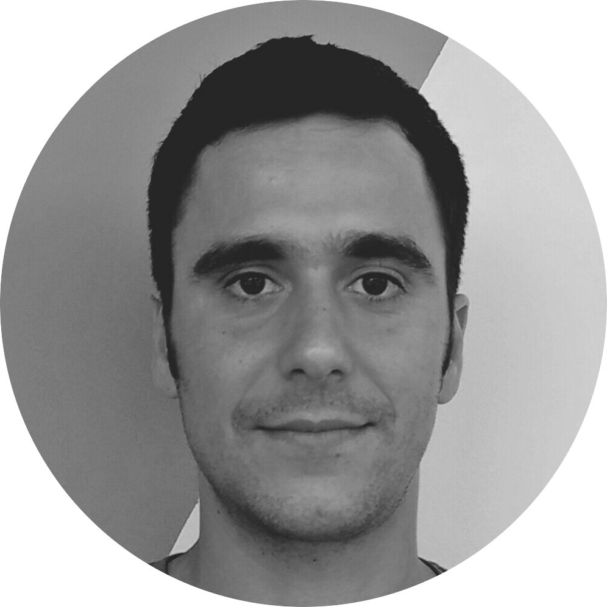
Francesco Scandola, Research Assistant
Francesco is a Research Assistant since October 2016 (currently working on the NSE project).
-
Ahnaf Siddiqi, Research Assistant
Ahnaf is Research Assistant since November 2016.
-
Ragav Sridharan, Research Assistant
Ahnaf is Research Assistant since January 2017.
-
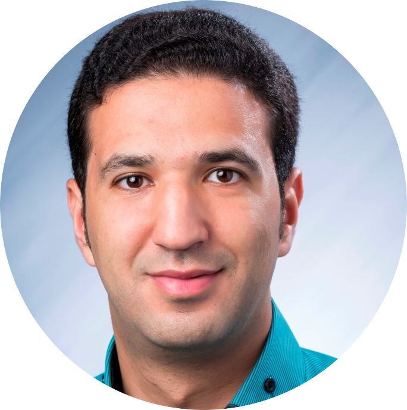
Aymen Fakhreddine (Visiting PhD Student from IMDEA Networks Institute)
Aymen focuses his research on pervasive localization systems.
Affiliates/Alumni
-
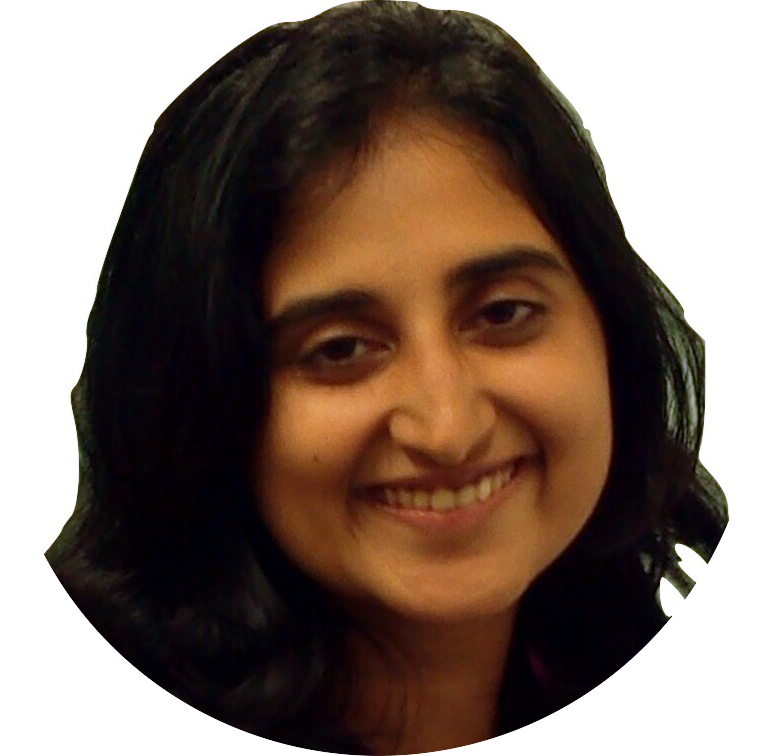
Sandra Siby, Research Assistant
Sandra was a Research Assistant between June 2016 and August 2017. Now: PhD student at EPFL.
-
Giuseppe Bernieri, Visiting PhD student'17 (Roma Tre University)
Giuseppe was working on anomaly detection on SWaT and WDS testbeds.
-
Anand Agrawal, Research Assistant
Anand was a Research Assistant in 2016.
-
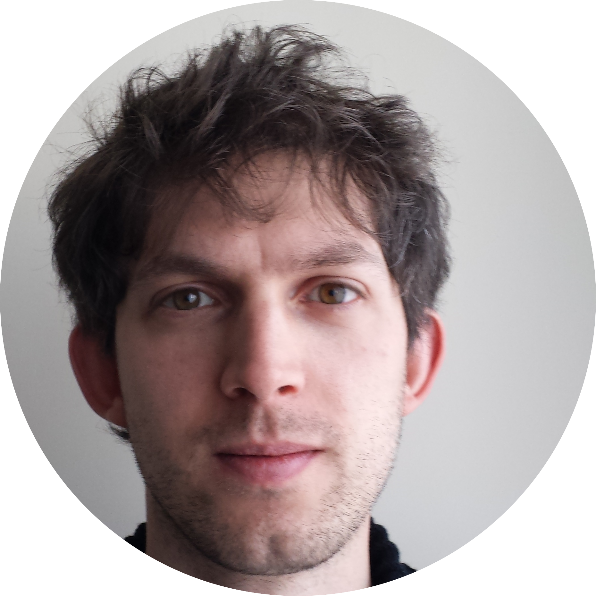
Marco Rocchetto, PostDoc
Marco was a PostDoc at the SCy-Phy group in Oct/15 to Sep/16. He is now with the University of Luxembourg.
-
Naman Govil, research intern'16 (IIIT Hyderabad)
Naman was with SCy-Phy March-June 2016, see his personal page. Now: Master's student at Georgia Tech.
-
David Urbina, Visiting researcher'15 (UT Dallas)
David worked on attack and detection in the Fieldbus, author of SWaT attack. He is now working with Intel.
-
Pierre Gaulon, Research student'15 (ENSEIRB-MATMECA, Bordeaux)
Pierre worked on Bro extensions for attack detection for EtherNet/IP.
-
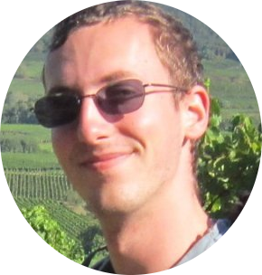
Nicolas Iooss, Research student'15 (with Akheros/Corps des mines, Paris)
Nicolas worked on Scapy tools and MitM attacks for EtherNet/IP in SWaT.